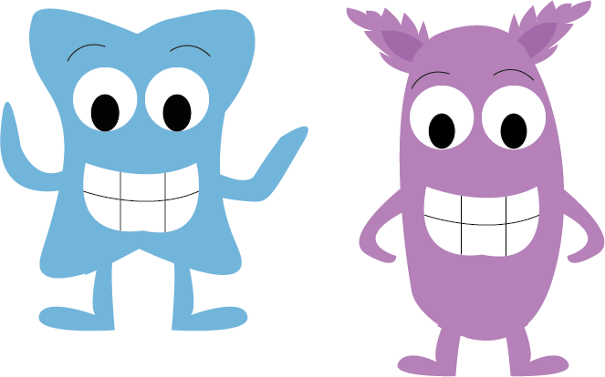

Det aller første jeg gjorde da jeg skulle starte mit animationsprojekt var at finde ud af hvordan mit design skulle se ud og hvoem mine figure skulle være.
Som en del af animations projektet skulle vi designe vores eget landskab med tilhørende karakterer.
Dog nåde min animation aldrig at blive helt som jeg ønskede den. Jeg havde en masse problemer med mine spritesheets, som jeg brugte rigtig meget tid på at få til at virke, dog måtte jeg indse at jeg ikke kunne løse problemet. Mit næste problem opstod i mit javascript hvor jeg endnu engang ikke kune løse problemet. Det jeg nåde frem til kan sesher
I den efterfølgende uge fik vi til opgave at lave en animation til Sex og samfund, den kan ses her.
Link til animation